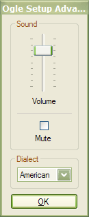

Advanced Setup
The Advanced Setup dialog configures sound effects, and sets the English dialect to be used during play:

The Volume and Mute controls affect the volume of Ogle sound effects.
The Dialect dropdown selects American, British, or Canadian word lists for use during play. This affects spelling and general vocabulary when Ogle searches for words, and when user-entered words are verified.